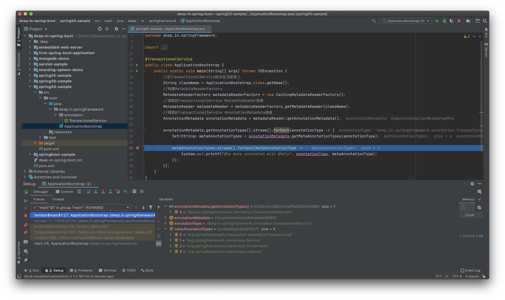

Composed Annotation
Spring 组合注解(Composed Annotation)
1. 组合注解说明¶
Spring Framework的组合注解在官方Github的Wiki中有说明，可以参考。
A composed annotation is an annotation that is meta-annotated with one or more annotations with the intent of combining the behavior associated with those meta-annotations into a single custom annotation. For example, an annotation named
@TransactionalServicethat is meta-annotated with Spring's@Transactionaland@Serviceannotations is a composed annotation that combines the semantics of@Transactionaland@Service.@TransactionalServiceis technically also a custom stereotype annotation.
Wiki说明，组合注解(Composed annotation)是指某个注解元标注了一个或多个其他注解，来组合这些注解的行为变为单个自定义注解。
同时举例说明了@TransactionalService注解标注了@Transactional和@Service注解，因此@TransactionalService组合了这两个注解的语义，并且@TransactionalService也是一个自定义的模式注解。
Spring中并没有@TransactionalService注解，但根据Wiki可以将其描述为：
package deep.in.springframework.annotation;
import org.springframework.stereotype.Service;
import org.springframework.transaction.annotation.Transactional;
import java.lang.annotation.*;
@Target({ElementType.TYPE})
@Retention(RetentionPolicy.RUNTIME)
@Documented
@Transactional
@Service
public @interface TransactionalService {
}
要注意的是@Service是Spring模式注解(Stereotype annotation)，而@Transactional是Spring事务注解。也就是说，Spring组合注解(Composed annotation)中的元注解允许是Spring模式注解和其他功能性注解的组合。
在Spring Boot中，@SpringBootApplication注解在1.2.0时引入，在此之前，通常在引导类上标注@Configuration，以表明它是Spring模式注解，再标注@EnableAutoConfiguration来开启自动装配，还可以标注@ComponentScan指定扫描@Component的范围。再引入@SpringBootApplication之后，引导类上可以直接标注，综合以上3中特性，是组合注解的体现。
package org.springframework.boot.autoconfigure;
...
@Target(ElementType.TYPE)
@Retention(RetentionPolicy.RUNTIME)
@Documented
@Inherited
@SpringBootConfiguration
@EnableAutoConfiguration
@ComponentScan(excludeFilters = { @Filter(type = FilterType.CUSTOM, classes = TypeExcludeFilter.class),
@Filter(type = FilterType.CUSTOM, classes = AutoConfigurationExcludeFilter.class) })
public @interface SpringBootApplication {
...
}
2. 理解组合注解¶
以上面的@TransactionalService为例，其元注解层次关系为：
@TransactionalService
|- @Transactional
|- @Service
|- @Component
按照@Component派生性的特点，@TransactionalService也是Spring模式注解(@Component派生注解)，可以被ClassPathScanningCandidateComponentProvider识别，被其子类ClassPathBeanDefinitionScanner注册为Spring Bean。而@Transactional作为事务注解，是原子注解，不能继续拆分。
@Transactional注解定义为：
package org.springframework.transaction.annotation;
...
@Target({ElementType.TYPE, ElementType.METHOD})
@Retention(RetentionPolicy.RUNTIME)
@Inherited
@Documented
public @interface Transactional {
...
}
在讨论Spring模式注解时，@Component派生原理的源码解析中，Spring Framework抽象出了AnnotationMetadata接口和实现类AnnotationMetadataReadingVisitor，并且从Spring Framework 4.0开始，其关联的AnnotationAttributesReadingVisitor采用递归方式查找元注解，支持了多层次元注解信息查找。
Spring通过ASM读取类资源，直接操作其中的字节码，获取相关元信息，相关接口为MetadataReader：
package org.springframework.core.type.classreading;
import org.springframework.core.io.Resource;
import org.springframework.core.type.AnnotationMetadata;
import org.springframework.core.type.ClassMetadata;
/**
* Simple facade for accessing class metadata,
* as read by an ASM {@link org.springframework.asm.ClassReader}.
*
* @author Juergen Hoeller
* @since 2.5
*/
public interface MetadataReader {
/**
* Return the resource reference for the class file.
*/
Resource getResource();
/**
* Read basic class metadata for the underlying class.
*/
ClassMetadata getClassMetadata();
/**
* Read full annotation metadata for the underlying class,
* including metadata for annotated methods.
*/
AnnotationMetadata getAnnotationMetadata();
}
getClassMetadata()方法用来获取类的元信息，getAnnotationMetadata()方法获取注解元信息，getResource()方法返回类资源的Resource信息。
其实现类是SimpleMetadataReader，当前版本的Spring Framework(5.2.8.RELEASE)仅有此一个实现：
package org.springframework.core.type.classreading;
...
final class SimpleMetadataReader implements MetadataReader {
...
SimpleMetadataReader(Resource resource, @Nullable ClassLoader classLoader) throws IOException {
SimpleAnnotationMetadataReadingVisitor visitor = new SimpleAnnotationMetadataReadingVisitor(classLoader);
getClassReader(resource).accept(visitor, PARSING_OPTIONS);
this.resource = resource;
this.annotationMetadata = visitor.getMetadata();
}
private static ClassReader getClassReader(Resource resource) throws IOException {
try (InputStream is = resource.getInputStream()) {
try {
return new ClassReader(is);
}
catch (IllegalArgumentException ex) {
throw new NestedIOException("ASM ClassReader failed to parse class file - " +
"probably due to a new Java class file version that isn't supported yet: " + resource, ex);
}
}
}
...
}
其关联的ClassMetadata信息和AnnotationMetadata信息在构造阶段完成初始化。SimpleAnnotationMetadataReadingVisitor替代了原有的AnnotationMetadataReadingVisitor和AnnotationAttributesReadingVisitor。
在解析Spring模式注解时，分析到ClassPathScanningCandidateComponentProvider的findCandidateComponents()方法有读取MetadataReader的方式(5.2.8.RELEASE)：
MetadataReader metadataReader = getMetadataReaderFactory().getMetadataReader(type);
MetadataReader metadataReader = getMetadataReaderFactory().getMetadataReader(resource);
getMetadataReaderFactory()方法为：
public final MetadataReaderFactory getMetadataReaderFactory() {
if (this.metadataReaderFactory == null) {
this.metadataReaderFactory = new CachingMetadataReaderFactory();
}
return this.metadataReaderFactory;
}
这里默认使用的是CachingMetadataReaderFactory实例，而getMetadataReader方法则是定义在MetadataReaderFactory接口中：
package org.springframework.core.type.classreading;
import java.io.IOException;
import org.springframework.core.io.Resource;
/**
* Factory interface for {@link MetadataReader} instances.
* Allows for caching a MetadataReader per original resource.
*
* @author Juergen Hoeller
* @since 2.5
* @see SimpleMetadataReaderFactory
* @see CachingMetadataReaderFactory
*/
public interface MetadataReaderFactory {
/**
* Obtain a MetadataReader for the given class name.
* @param className the class name (to be resolved to a ".class" file)
* @return a holder for the ClassReader instance (never {@code null})
* @throws IOException in case of I/O failure
*/
MetadataReader getMetadataReader(String className) throws IOException;
/**
* Obtain a MetadataReader for the given resource.
* @param resource the resource (pointing to a ".class" file)
* @return a holder for the ClassReader instance (never {@code null})
* @throws IOException in case of I/O failure
*/
MetadataReader getMetadataReader(Resource resource) throws IOException;
}
为了演示，示例代码中可以利用该方法读取@TransactionalService注解元信息：
package deep.in.springframework;
import deep.in.springframework.annotation.TransactionalService;
import org.springframework.core.type.AnnotationMetadata;
import org.springframework.core.type.classreading.CachingMetadataReaderFactory;
import org.springframework.core.type.classreading.MetadataReader;
import org.springframework.core.type.classreading.MetadataReaderFactory;
import java.io.IOException;
import java.util.Set;
@TransactionalService
public class ApplicationBootstrap {
public static void main(String[] args) throws IOException {
//@TransactionalService标注在当前类上
String className = ApplicationBootstrap.class.getName();
//构建MetadataReaderFactory
MetadataReaderFactory metadataReaderFactory = new CachingMetadataReaderFactory();
//读取@TransactionalService MetadataReader信息
MetadataReader metadataReader = metadataReaderFactory.getMetadataReader(className);
//读取@TransactionalService AnnotationMetadata信息
AnnotationMetadata annotationMetadata = metadataReader.getAnnotationMetadata();
annotationMetadata.getAnnotationTypes().stream().forEach(annotationType -> {
Set<String> metaAnnotationTypes = annotationMetadata.getMetaAnnotationTypes(annotationType);
metaAnnotationTypes.stream().forEach(metaAnnotationType -> {
System.out.printf("@%s meta annotated with @%s\n", annotationType, metaAnnotationType);
});
});
}
}
运行程序，可以看到运行信息： 
当前类仅有一个Annotation，是deep.in.springframework.annotation.TransactionalService。继续获取当前注解的元注解，分别是：
0 = "org.springframework.transaction.annotation.Transactional"
1 = "org.springframework.stereotype.Service"
2 = "org.springframework.stereotype.Component"
3 = "org.springframework.stereotype.Indexed"
和前面总结的@TransactionalService层次关系进行对比：
@TransactionalService
|- @Transactional
|- @Service
|- @Component
这里的@Indexed注解是标注在@Component之上的：
package org.springframework.stereotype;
...
@Target(ElementType.TYPE)
@Retention(RetentionPolicy.RUNTIME)
@Documented
@Indexed
public @interface Component {
String value() default "";
}
因为@TransactionalService标注在ApplicationBootstrap类上，annotationMetadata.getAnnotationTypes()方法返回的集合仅包含@TransactionalService，而@TransactionalService所关联的元注解则是4个，即通过annotationMetadata.getMetaAnnotationTypes(annotationType)返回的值。